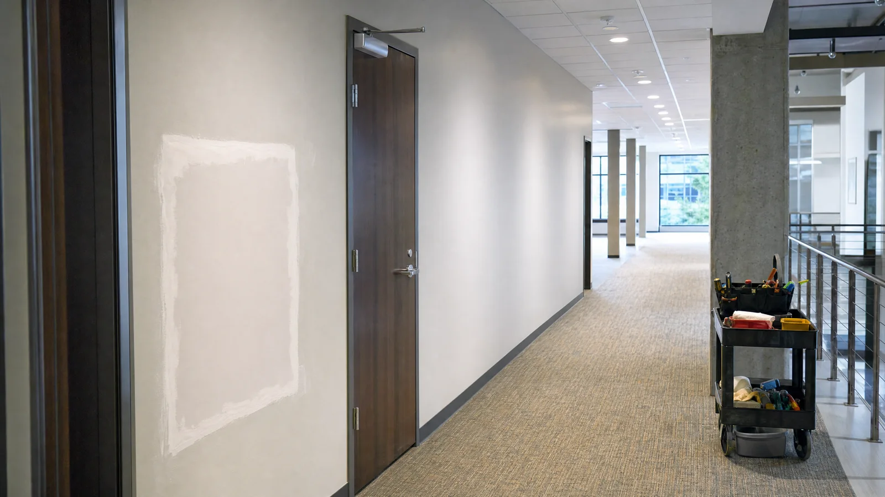
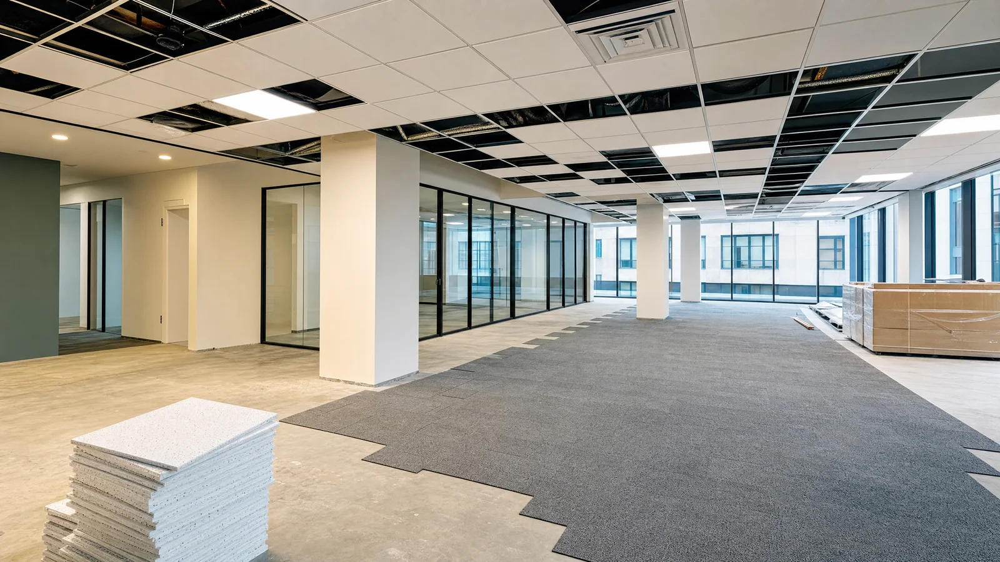

Keeping commercialproperties moving.
Repairs, turnovers and ongoing property requirements for commercial owners, managers and occupants. Explain the condition and how the space is used; IVO helps organize the appropriate service conversation.
You bring the requirement.
We help define the path.
Every request follows the same visible steps, so you always know where the work stands and who has the next action.
Share the need
Tell us the location, condition, objective and timing.
Review & define the scope
Review available information, clarify the work and discuss the appropriate next step.
Coordinate the work
Coordinate resources, the defined scope and project communication.
Document completion
Review applicable closeout items and communicate where the scope stands.
A clearer record for the next repair.
Property teams need more than a place to report that something is broken. They need the condition, the requested result and the next action to stay connected. IVO’s approach gives an individual repair the same attention to scope and communication as a larger property requirement.
Start with the condition
Tell us what is happening and where it affects the property. A loose door, damaged finish or worn component may involve several possible causes. Photographs and a short explanation of how the area is used help the team ask the right questions before assuming a solution.
Work within the property’s routine
Tenant operations, deliveries, operating hours and access arrangements can shape even a modest repair. Identify the contact who can provide entry and the person who can approve the scope. For a portfolio, keep the instructions and history distinct for each location.
Build a useful property history
The original request, supporting documents, relevant messages and completion information stay associated with the work. If the condition returns or a related improvement is requested later, the property team has a starting record instead of a disconnected set of emails.
A turnover creates a list of smaller requirements.
An illustrative requirement: a commercial suite needs wall repairs, finish touch-ups and attention to several doors before the next tenant moves in. An itemized list helps the team distinguish repair priorities from optional improvements and identify which items need a customer decision.
- Group the affected areas under the correct property and contact.
- Separate confirmed repairs from items needing further review.
- Record the agreed completion condition and any remaining follow-up.
What IVO can
organize for you.

01 / CapabilityCommercial repairs
Start with the damaged, worn or non-functioning property component. Applicable scopes include doors and hardware, walls, ceilings, flooring, tile, painting and other defined commercial repairs.
A maintenance request is easier to review when it describes the condition rather than only naming a trade. Explain what is damaged, loose, worn, leaking or no longer operating as intended, and identify the affected area. The team can then discuss whether the need appears to be a repair, replacement or a broader property improvement.
Small issues can have different causes and access requirements. A door problem may involve the hardware, frame or surrounding finish; a damaged wall may need preparation before repainting. Related conditions are considered when defining the requested result, so a visible symptom is not mistaken for the entire scope.
Discuss this requirement →
02 / CapabilityTurnovers & property improvements
Coordinate repairs, finish work and punch-list items around tenant changes or the continued use of an existing space. Photos and a clear list of affected areas help define the work.
A tenant change can create a list of separate requirements that must be organized around one handover date. Identify what belongs to the outgoing tenant, what must be retained and what the incoming occupant needs ready. That information helps distinguish a basic turnover from a larger improvement project.
An itemized list also gives property teams a way to track progress room by room or area by area. Note any work being handled by another contractor and any decisions still awaiting ownership approval. Shared priorities help the team focus on what must be completed first.
Discuss this requirement →Find the details
you need.
Practical notes on what to send, how the work is organized and how decisions are recorded.
One request or recurring needs
Submit an individual repair or describe recurring requirements across your properties. Identify the location and scope for each request so the team can keep records separate.
For multiple locations, keep each property address and its requested work identifiable. A recurring relationship can still contain separate scopes, priorities and authorizations. Describe how your organization issues work orders, who approves estimates and where updates or completion records should be sent.
Access & scheduling
Include site contacts, operating hours, access restrictions and preferred work windows. Keep access codes and sensitive instructions out of shared opportunity descriptions.
A workable visit depends on knowing who will provide entry, where vehicles or materials may be placed and whether tenants need advance notice. Explain any escort requirements, loading restrictions or limits on work during occupied hours. Private access instructions should be shared through the appropriate restricted channel rather than a provider-facing listing.
01Helpful documentation
Share photos, dimensions, the condition observed and the result you need. Existing product details or prior scope documents can help clarify the request.
Wide photographs show where the issue sits within the property, while close views show the affected component. Include approximate dimensions and product labels when available. If the same issue has been repaired before, describe what was done and whether the condition returned; that context can change the questions asked during review.
02Related work
Larger improvements can be reviewed through Commercial Construction. Unexpected damage may require Emergency Property Response, while unusual modifications may fit Specialty Services.
A repair may reveal that a component needs replacement, or that several related areas should be addressed together. The original request can remain the starting record while the revised requirement is clarified. Any larger scope, additional visit or changed price should be confirmed through the applicable approval process.
You’ll know when
we’ll respond.
Response targets are written down by priority, with a separate clock for reply, site visit and next step.
Unsafe or unsecured
- Call answered
- By a person
- Crew on site
- Target within 4 hours in served metros
- Next step
- Temporary securing on the first visit. Written plan within 24 hours
Broken storefront or entry, active leak, impact damage, an opening that can't be locked.
Affecting operations
- Reply
- Within 2 business hours
- On site or assessed
- Within 1 business day
- Next step
- Fix or written plan within 2 business days
A failed door closer, a damaged fixture in a public area, a repair blocking a tenant.
Repairs & turnovers
- Reply
- Same business day
- Site visit or scope call
- Within 2 business days
- Written estimate
- Within 5 business days of a complete scope
Drywall and paint repairs, suite make-ready, hardware, flooring and finish work.
Planned work
- Reply
- Within 1 business day
- Bid / no-bid decision
- Within 2 business days
- Proposal
- By the bid deadline, or a date agreed with you
Tenant improvements, renovations, GC trade packages and multi-trade projects.
Business hours are Monday–Friday. Arrival times depend on location, access and safety conditions, and we always give you a confirmed estimate on the call. A submitted form does not dispatch a crew, so for emergencies always call.
Before the next step.
Still have a question? Call (206) 539-9549 or email office@ivoservgroup.com.
Can we submit several properties through one relationship?
Describe your portfolio and the way your organization issues work orders. Individual locations and scopes should remain identifiable, so site contacts, approval instructions and records are not confused between properties.
What if the repair turns out to need replacement?
The team should clarify the revised requirement and its effect on the original scope. A repair request is not automatic permission to replace a component or add unrelated work. The appropriate decision is recorded before the changed scope proceeds.
Can IVO work alongside our existing maintenance team?
Explain which responsibilities your internal team or preferred vendors already handle and where you need additional support. A defined gap can be reviewed without changing the rest of your operating relationships.
Explore other
service paths.
Commercial Construction
Tenant improvements, renovations, build-outs and defined trade packages.
Emergency Property Response
Temporary securing and follow-up repair planning after unexpected damage.
Specialty Services
Property modifications, multi-trade work and scopes that don’t fit a standard label.
Start with one project.
Let us earn the next one.
Tell us what the property needs. We’ll help identify the appropriate next step.